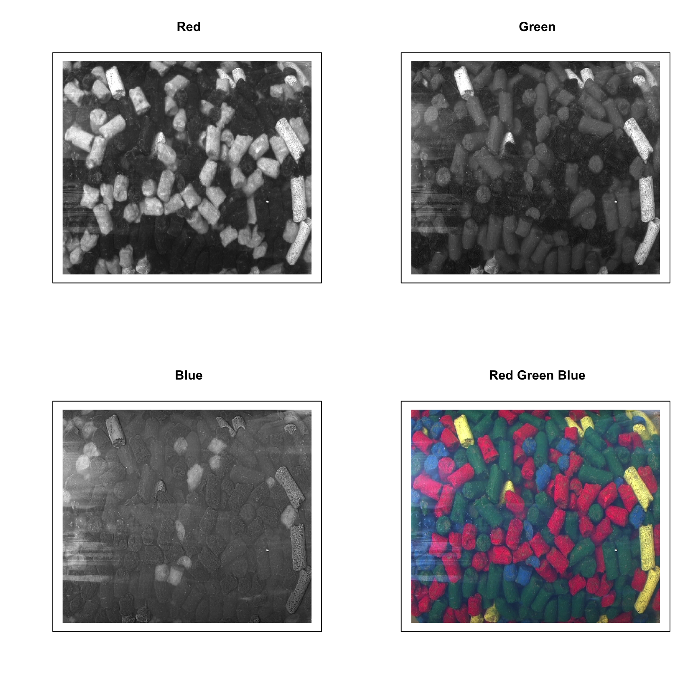

0.1 Autoscaling
Autoscaling consists of two steps. First step is centering (or, more precise, mean centering) when center of a data cloud in variable space is moved to an origin. Mathematically it is done by subtracting mean from the data values separately for every column/variable. Second step is scaling og standardization when data values are divided to standard deviation so the variables have unit variance. This autoscaling procedure (both steps) is known in statistics simply as *standardization’. You can also use arbitrary values to center or/and scale the data, in this case use sequence or vector with these values should be provided as an argument for center or scale.
R has a built-in function for centering and scaling, scale(). The method prep.autoscale() is actually a wrapper for this function, which is mostly needed to set all user defined attributes to the result (all preprocessing methods will keep the attributes). Here are some examples how to use it:
library(mdatools)
# get data and exclude column Income
data(people)
# centering
data1 = people
data1 = prep.autoscale(data1, center = T, scale = F)
# standardization
data2 = people
data2 = prep.autoscale(data2, center = F, scale = T)
# autoscaling
data3 = people
data3 = prep.autoscale(data3, center = T, scale = T)
# centering with median values
data4 = people
data4 = prep.autoscale(data4, center = apply(data4, 2, median), scale = F)
par(mfrow = c(2, 2))
boxplot(data1)
boxplot(data2)
boxplot(data3)
boxplot(data4)